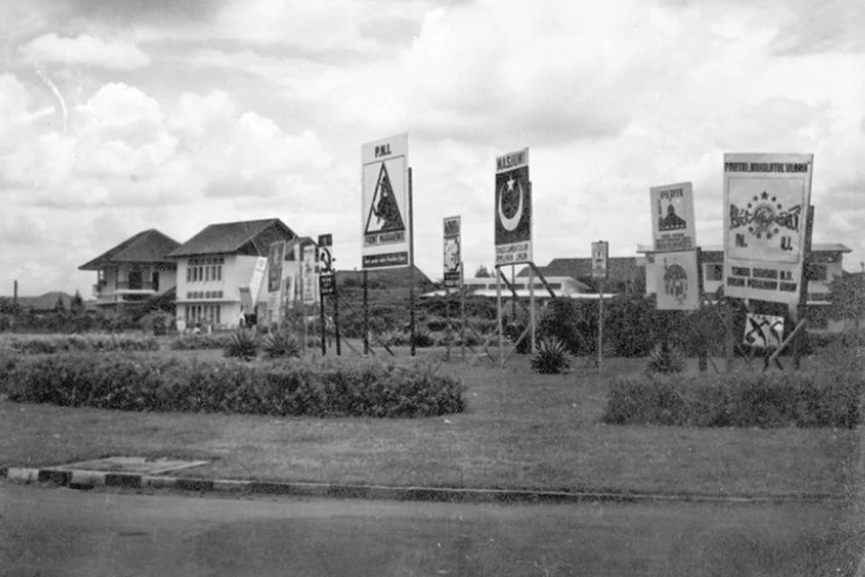
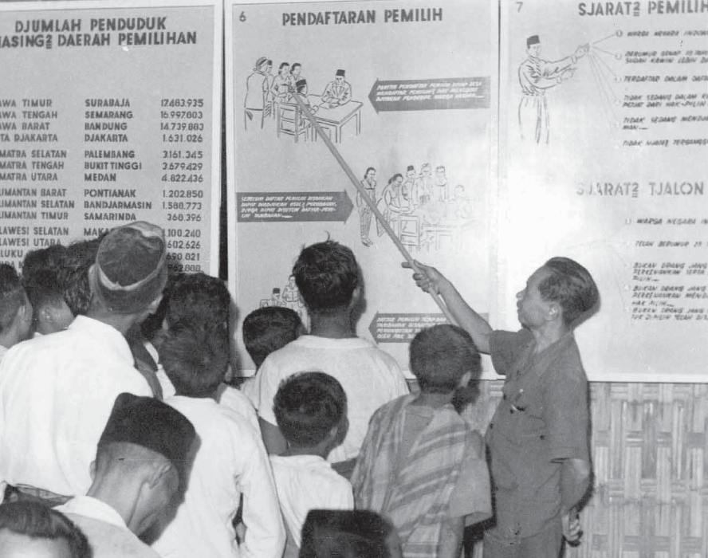
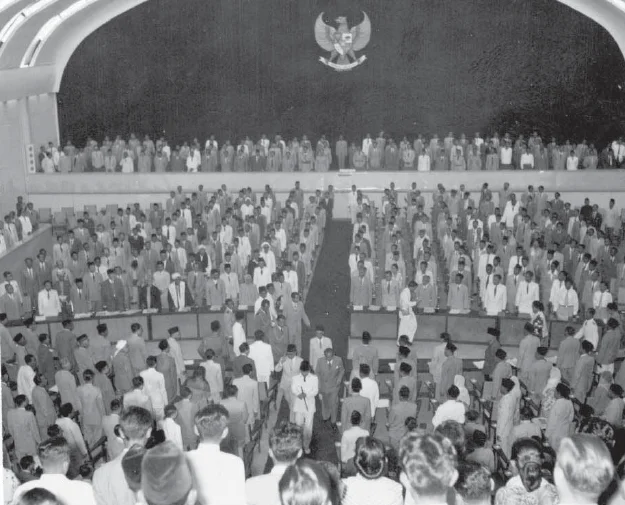
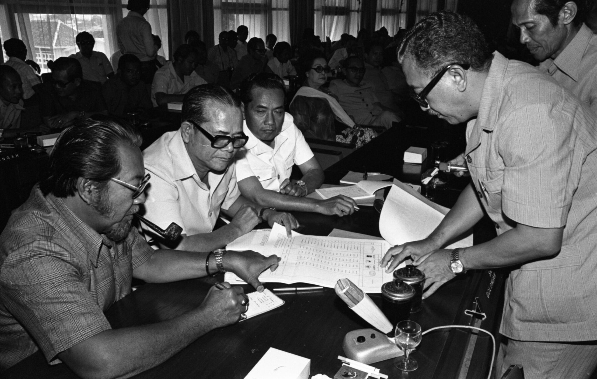
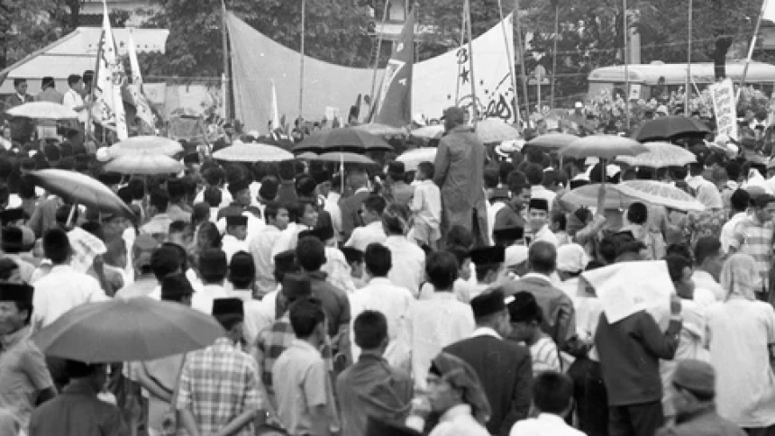
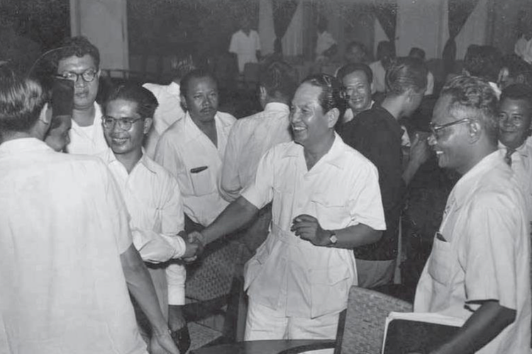
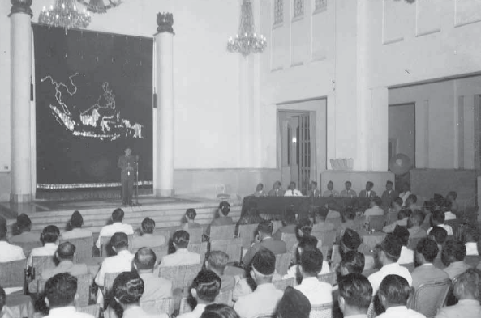
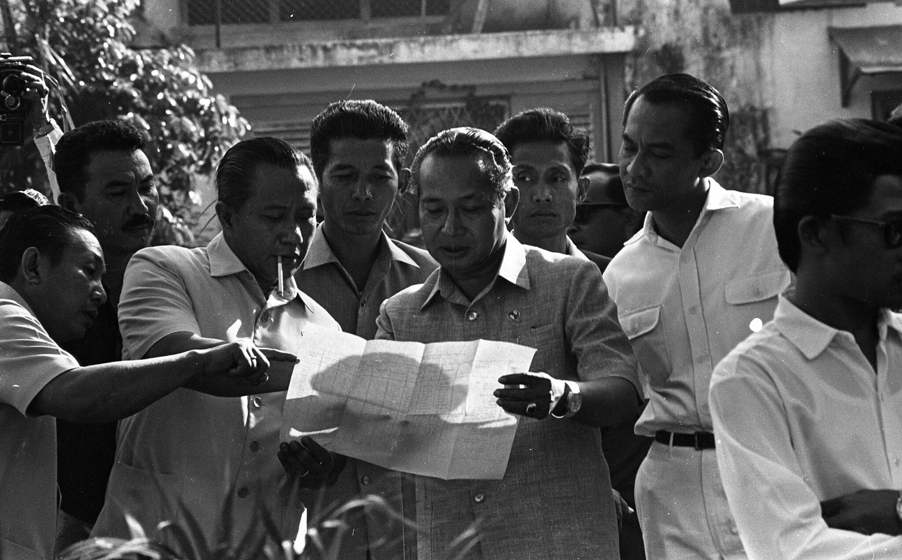
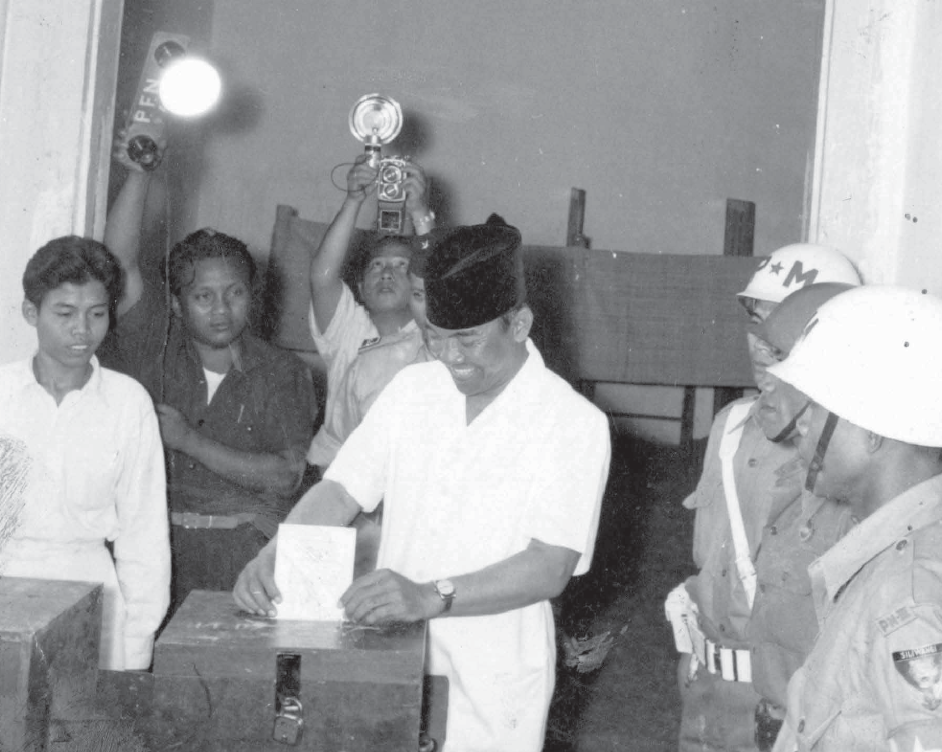

Pemilu ini mencerminkan semangat demokrasi rakyat Indonesia, meskipun menghadapi tantangan seperti konflik ideologi dan rendahnya pendidikan politik masyarakat. Pemilu 1955 menjadi tonggak sejarah dalam perjalanan politik bangsa untuk membangun pemerintahan yang lebih stabil dan demokratis.
Latar Belakang

Situasi Pasca Kemerdekaan: Setelah Indonesia merdeka, terjadi pergolakan politik, ekonomi, dan sosial. Negara ini menggunakan Undang-Undang Dasar Sementara 1950 sebagai pedoman, namun pemerintahan parlementer yang diterapkan menghadapi banyak ketidakstabilan politik.
Kebutuhan Demokratisasi: Pemilu 1955 dirancang untuk membangun sistem demokrasi yang representatif, memilih anggota parlemen, serta menyusun konstitusi yang lebih tetap.
Tuntutan Legitimasi: Pemerintah memerlukan dukungan luas dari rakyat untuk menstabilkan pemerintahan dan memajukan pembangunan nasional.
Tujuan

Memilih anggota DPR: Sebagai perwakilan rakyat yang menjalankan fungsi legislatif.
Memilih anggota Konstituante: Untuk merumuskan dan menetapkan Undang-Undang Dasar yang baru
Mewujudkan sistem demokrasi: Menjamin partisipasi rakyat secara langsung dalam menentukan nasib bangsa.
Pelaksanaan Semua Bidang
Politik

Pemilu dilakukan dalam dua tahap:
- 29 September 1955: Pemilihan anggota DPR.
- 15 Desember 1955: Pemilihan anggota Konstituante.
Diikuti oleh 172 partai politik dan individu independen, dengan dominasi PNI, Masyumi, NU, dan PKI.
Pemilu berlangsung dalam suasana demokratis, meskipun dengan berbagai keterbatasan teknis.
Ekonomi

Pemilu 1955 tidak berdampak langsung terhadap perbaikan ekonomi. Namun, stabilitas politik yang diharapkan dari hasil pemilu diharapkan membantu pembangunan ekonomi.
Ekonomi Indonesia saat itu masih dalam kondisi sulit, dengan inflasi tinggi dan ketergantungan pada bantuan luar negeri.
Sosial

Pemilu ini melibatkan seluruh lapisan masyarakat, termasuk mereka yang baru belajar tentang proses demokrasi.
Tingkat partisipasi masyarakat sangat tinggi, menunjukkan antusiasme rakyat terhadap demokrasi.
Budaya

Pemilu mencerminkan keragaman budaya dan aspirasi politik rakyat Indonesia.
Konflik ideologi (nasionalisme, Islam, komunisme) muncul tetapi tetap dalam kerangka demokratis.
Pendidikan

Literasi politik mulai meningkat karena kampanye-kampanye pemilu memperkenalkan konsep demokrasi kepada masyarakat.
Meskipun demikian, tingkat pendidikan masyarakat yang rendah menjadi tantangan untuk memahami isu-isu politik secara mendalam.
Pertahanan Dan Keamanan

Pemilu berlangsung relatif aman, meskipun ada kekhawatiran akan konflik ideologi. Aparat keamanan berhasil menjaga ketertiban selama proses pemilu.
Hasil Pemilu 1995

Anggota DPR:
- PNI: 22,3%
- Masyumi: 20,9%
- NU: 18,4%
- PKI: 16,4%
Partai-partai kecil lainnya berbagi sisa suara.
Anggota Konstituante: Memiliki komposisi serupa dengan DPR, dengan perbedaan kecil pada distribusi suara partai kecil.
Gagal Membentuk UUD Baru: Konstituante tidak berhasil mencapai kesepakatan soal dasar negara, yang akhirnya menyebabkan Dekrit Presiden 5 Juli 1959.
Kelebihan Dan Kekurangan
Pemilu yang Demokratis: Pemilu ini dianggap paling demokratis dalam sejarah Indonesia karena dilakukan secara langsung, umum, bebas, rahasia, jujur, dan adil (luber jurdil).
Tingginya Partisipasi Rakyat: Antusiasme rakyat terhadap demokrasi sangat tinggi, dengan partisipasi pemilih mencapai lebih dari 90%.
Meningkatkan Kesadaran Politik: Pemilu ini meningkatkan pemahaman masyarakat tentang hak politik mereka.
Kelebihan Dan Kekurangan
Terlalu Banyak Partai: Kehadiran 172 partai politik membuat suara rakyat terpecah, sehingga sulit mencapai stabilitas politik.
Konflik Ideologi: Perbedaan ideologi antara partai (nasionalis, agama, dan komunis) sering memicu ketegangan politik.
Ketidakstabilan Pemerintahan: Setelah pemilu, pemerintahan parlementer tetap tidak stabil karena sering terjadi pergantian kabinet.
Minimnya Pendidikan Politik: Banyak rakyat yang kurang memahami esensi demokrasi karena rendahnya tingkat pendidikan.